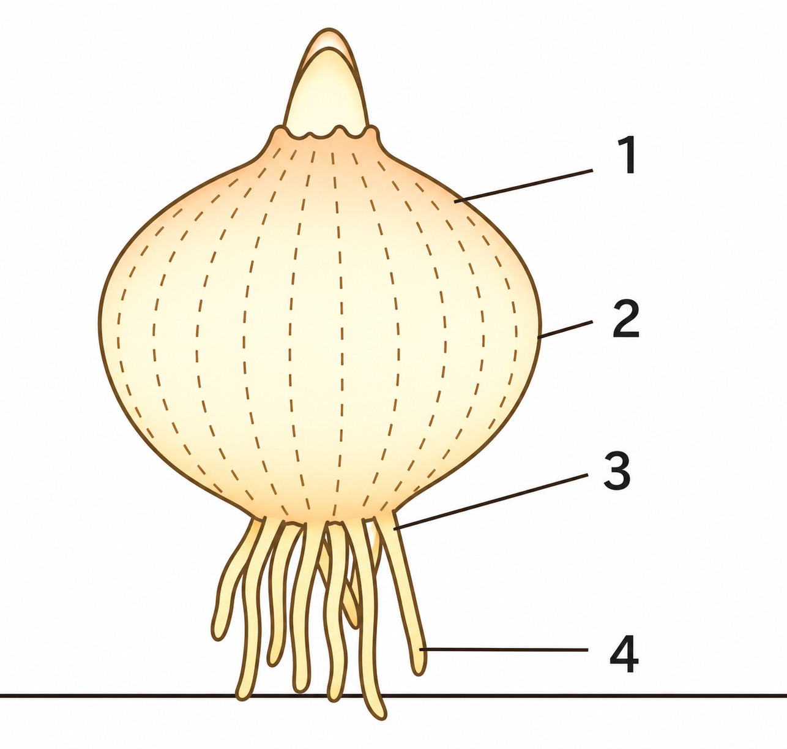
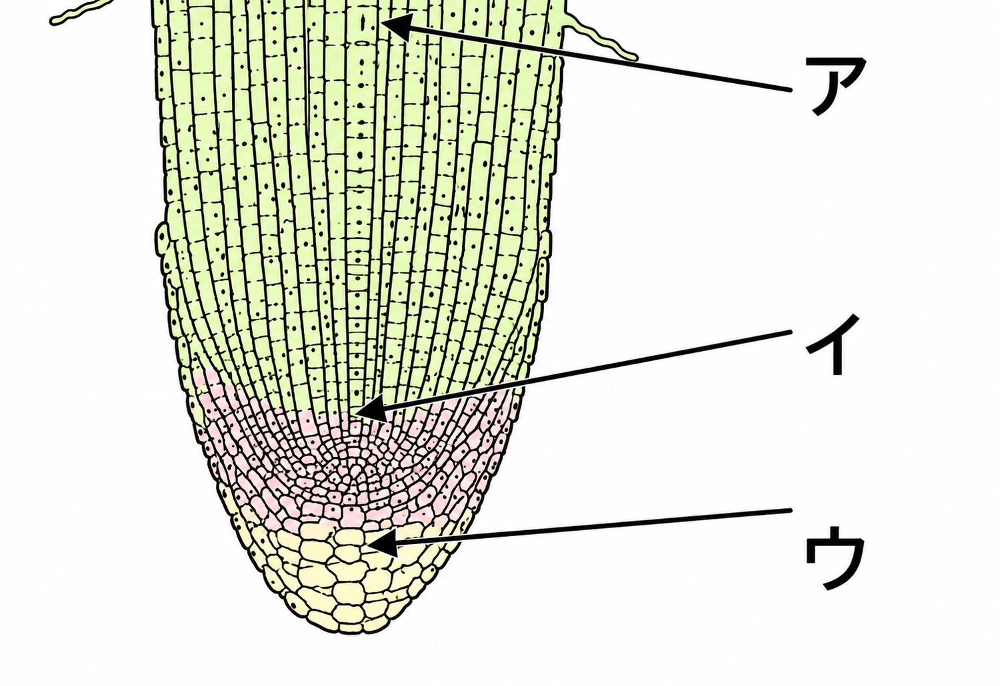
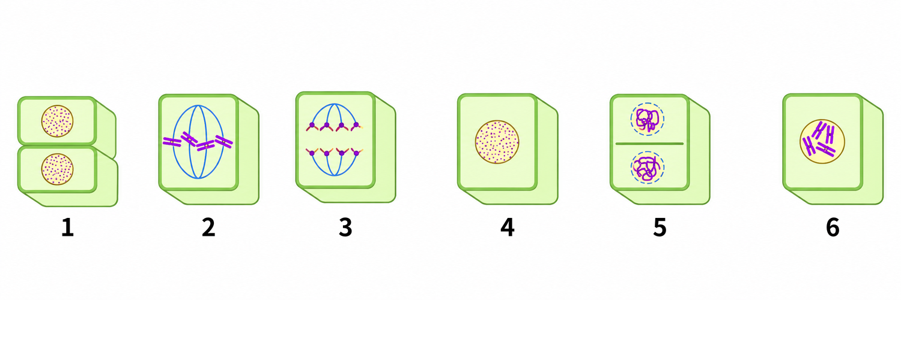
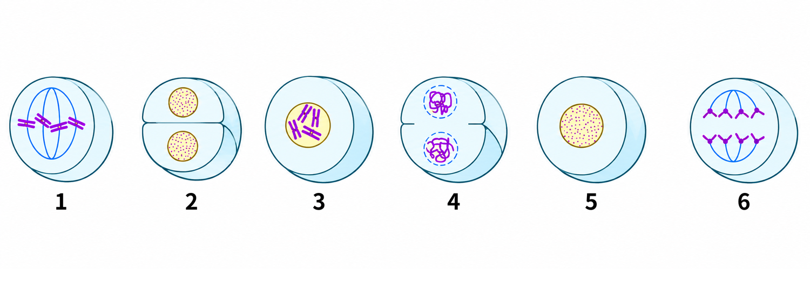

1細胞分裂の種類
📖 江原予備校テキスト 練習より
一つの細胞が二つに分かれることについて確認します。
✏️ 練習1:細胞分裂の種類
問1一つの細胞が二つに分かれることを何というか。
正解はイ。一つの細胞が二つに分かれることを細胞分裂といいます。
問2細胞分裂のうち、染色体の数が変わらない分裂を何というか。
正解はア。染色体の数が変わらないのは体細胞分裂です。
問3生殖細胞のように染色体の数が半分になる分裂を何というか。
正解はエ。染色体の数が半分になるのは減数分裂です。
2タマネギの根の観察
📖 江原予備校テキスト 練習より
タマネギを使って、細胞の分裂を観察します。
✏️ 練習2:タマネギの根の観察
問1細胞分裂を観察するのに適している、細胞分裂がさかんな部分は、図の1〜4のどれか。

タマネギ
正解はウ。根の先端（成長点）にあたる4です。
問21）の部分を切り取り、約60℃に熱した液に入れる。この液と、その目的の組み合わせとして正しいものはどれか。
正解はイ。うすい塩酸に入れると、細胞をうすくはがしやすくなります。
問3核が透明に見えるため染色液につける。染色液の名前と、染まる色の組み合わせとして正しいものはどれか。
正解はア。酢酸カーミン液（酢酸オルセイン液）が染色体を赤色に染めます。
3根の先端の構造
📖 江原予備校テキスト 練習より
タマネギの根の先端部分の構造図です。
✏️ 練習3:根の先端の構造
問1図で、細胞分裂がさかんなところはア〜ウのどこか。

タマネギの根の先端
正解はエ。イの部分が細胞分裂のさかんなところです。
問21）の部分を何というか。
正解はウ。細胞分裂がさかんな部分を成長点といいます。
4細胞分裂の順序
📖 江原予備校テキスト 練習より
植物細胞の細胞分裂の図を、分裂の順に並べます。図の下の数字は左から1〜6です。
✏️ 練習4:細胞分裂の順序
問1植物細胞の細胞分裂の図(5)を、分裂の順に並べたものはどれか。

植物細胞の細胞分裂(5)
正解はイ。核だけの4から始まり、染色体が見える6、中央に並ぶ2、両極に引かれる3、2つの核ができる5、2個の細胞1の順です。
問2植物細胞の細胞分裂の図(6)を、分裂の順に並べたものはどれか。

植物細胞の細胞分裂(6)
正解はア。核だけの5から始まり、染色体が見える3、中央に並ぶ1、両極に引かれる6、2つの核ができる4、2個の細胞2の順です。